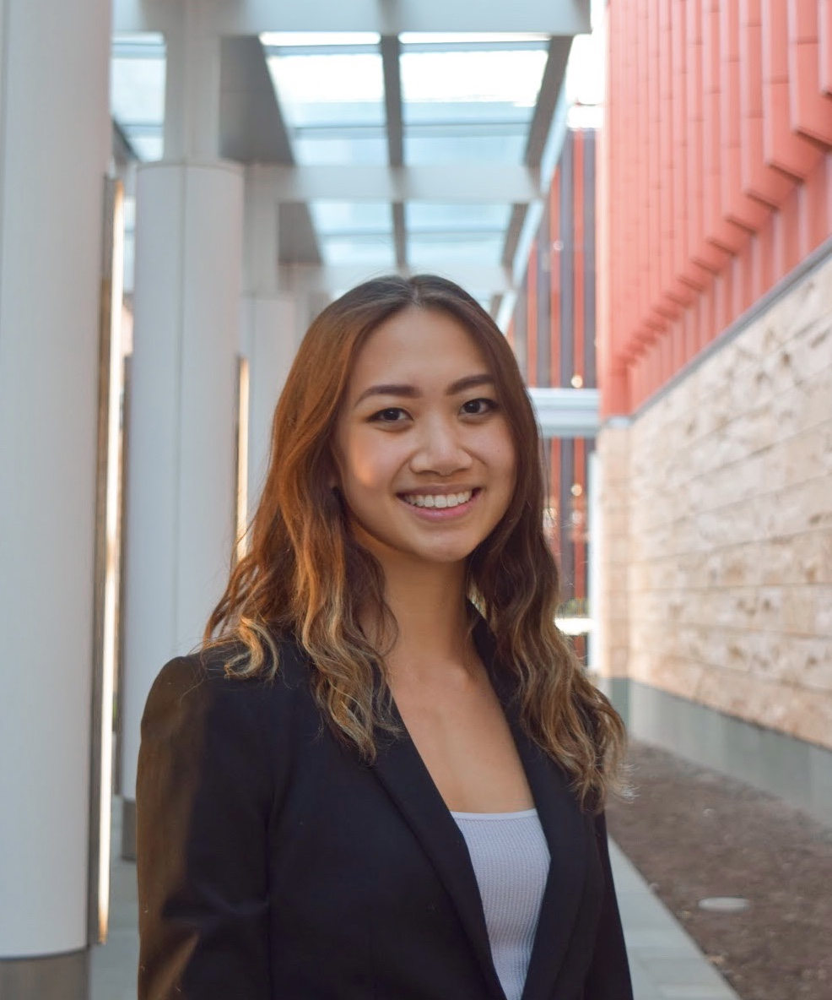

Thank you for visiting! My name is Aimee Zheng. I'm a sophomore at the University of Michigan, pursuing a dual-degree in business in the Ross School of Business and UI/UX in the School of Information. I graduated from Troy High School in Michigan in 2020, right when the pandemic was beginning. I learned quite a bit about myself during that time, and I hope that my art would represent my growth as well.
I'm a maker, a painter, a designer, and an explorer; art has been a major driving force in my life. Art, to me, has been a method to discover the giant world outside of me as well as the innermost parts of myself. I've been making all kinds of art: from elementary school doodles on my homework to now, where I've graduated to real canvases and paints. I've been a part of an independent studio since 6th grade, where I've produced multiple pieces of art that have won awards in Scholastic Art Awards and other art competitions, including having my art published in books. I've also pursued my artistic passions in ways that benefit my community, as I independently founded and designed a class to teach elementary and middle school students how to create digital art.
At the University of Michigan, I'm also involved in two business clubs: BOND Consulting Group and Phi Beta Lambda. In BOND, I am a senior consultant and in Phi Beta Lambda, I am currently the VP of Communications.